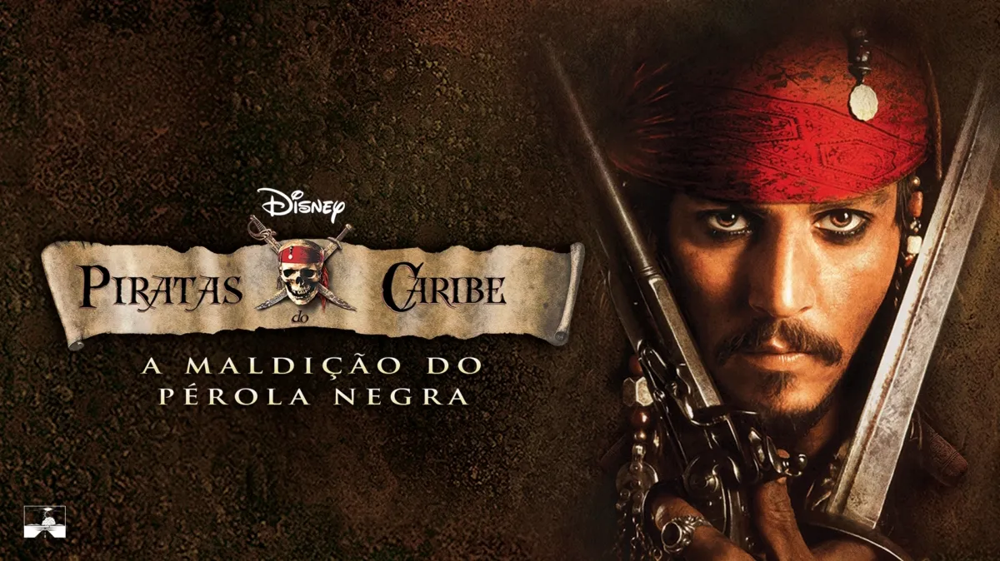
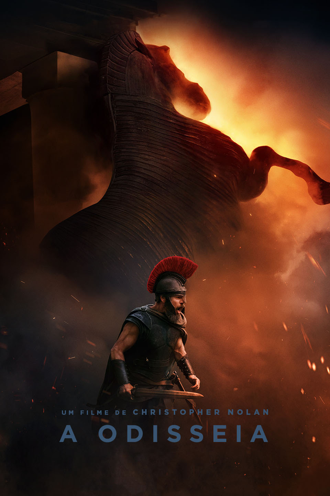
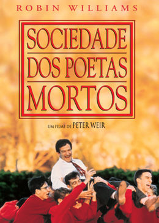

-
Todos os filmes de Piratas do Caribe

Clique aqui para ver a lista completa de filmes de Piratas do Caribe
-
Odisseia

Clique aqui para ver as observações sobre Odisseia
-
Sociedade dos poetas mortos

Clique aqui para ver as observações sobre Sociedade dos poetas mortos
Todos os filmes de Piratas do Caribe
Em primeiríssimo lugar fica toda a franquia Piratas do Caribe,
uma série de filmes de fantasia e aventura da Disney que acompanha
as confusões e os perigos enfrentados pelo excêntrico Capitão
Jack Sparrow, interpretado por Johnny Depp, junto a outros
personagens marcantes.
Em minha opinião, é uma das melhores séries de filmes de todos
os tempos, com uma história envolvente, personagens carismáticos
e cenas de ação emocionantes.
Abaixo estão as sinopses dos cinco filmes principais da saga:
1. Piratas do Caribe: A Maldição do Pérola Negra (2003)
-
Sinopse:
O ferreiro Will Turner (Orlando Bloom) se une ao malandro
Jack Sparrow para salvar Elizabeth Swann (Keira Knightley),
filha do governador, que foi sequestrada pela tripulação
do navio Pérola Negra. O navio é comandado pelo Capitão
Barbossa (Geoffrey Rush) e seus piratas, que vivem sob uma
maldição que os transforma em mortos-vivos à luz da lua.
2. Piratas do Caribe: O Baú da Morte (2006)
-
Sinopse:
Jack Sparrow descobre que tem uma dívida de sangue com
Davy Jones (Bill Nighy), o temido capitão fantasma do
Holandês Voador. Para escapar de uma eternidade de servidão,
Jack, acompanhado por Will e Elizabeth, precisa encontrar
o misterioso Baú do Homem Morto, que guarda o coração
pulsante de Jones.
3. Piratas do Caribe: No Fim do Mundo (2007)
-
Sinopse:
Com Davy Jones sob o controle da Companhia das Índias Orientais,
liderada por Lorde Cutler Beckett, que deseja extinguir a pirataria,
Will, Elizabeth e Barbossa embarcam em uma perigosa jornada
para resgatar Jack Sparrow e unir os Nove Lordes Piratas.
4. Piratas do Caribe: Navegando em Águas Misteriosas (2011)
-
Sinopse:
Jack Sparrow reencontra Angélica (Penélope Cruz), uma mulher
de seu passado, que o força a embarcar no navio do temido
pirata Barba Negra (Ian McShane). Juntos, eles correm contra
o tempo, Barbossa e a marinha espanhola para alcançar a
lendária Fonte da Juventude.
5. Piratas do Caribe: A Vingança de Salazar (2017)
-
Sinopse:
O Capitão Armando Salazar (Javier Bardem) e sua tripulação
de marinheiros fantasmas escapam do Triângulo do Diabo com
o objetivo de eliminar todos os piratas dos mares,
especialmente Jack Sparrow. Para sobreviver, Jack precisa
encontrar o lendário Tridente de Poseidon, um artefato
capaz de quebrar todas as maldições do oceano.
Vídeo sobre Piratas do Caribe
Assista a um vídeo com a história, curiosidades e a criação
do Capitão Jack Sparrow:
HISTÓRIA DO CAPITÃO JACK SPARROW! (Atualizada)
Voltar para o topo
A Odisseia
A Odisseia é um filme épico de ação e aventura dirigido por
Christopher Nolan e baseado na famosa obra de Homero.
Em minha opinião, a história de Odisseu é uma das aventuras mais
interessantes da literatura e do cinema, pois mistura mitologia,
batalhas, monstros, deuses e a determinação de um homem tentando
retornar para sua família.
A Odisseia (2026)
-
Sinopse:
Depois de participar da Guerra de Troia, Odisseu, também conhecido
como Ulisses, inicia uma longa jornada para retornar para sua casa,
na ilha de Ítaca.
Porém, sua viagem se transforma em uma grande aventura.
Durante o caminho, Odisseu precisa enfrentar tempestades,
criaturas mitológicas, inimigos e a interferência dos deuses.
Enquanto Odisseu tenta retornar para casa, sua esposa Penélope
e seu filho Telêmaco continuam esperando por ele em Ítaca.
A jornada acaba se transformando em uma história sobre
coragem, inteligência, sobrevivência, família e perseverança.
Por que gosto deste filme?
Gosto de A Odisseia porque a história apresenta uma grande aventura
envolvendo mitologia grega, batalhas e criaturas fantásticas.
Também acho interessante a determinação de Odisseu em enfrentar
diversos perigos durante sua longa viagem para conseguir retornar
para sua família.
Vídeo sobre a história de A Odisseia
Assista ao vídeo abaixo para entender melhor a história de
Odisseu e sua longa viagem de volta para Ítaca:
ENTENDA A ODISSEIA DE HOMERO
Trailer do filme
A Odisseia - Trailer Oficial Dublado
Voltar para o topo
Sociedade dos Poetas Mortos
Sociedade dos Poetas Mortos é um filme de drama lançado em 1989,
dirigido por Peter Weir e estrelado por Robin Williams.
Em minha opinião, este é um dos melhores filmes já feitos sobre
educação, amizade e a importância de aproveitar a vida.
O filme mostra como um professor pode transformar a maneira de
pensar de seus alunos e incentivá-los a buscar seus próprios sonhos.
Sociedade dos Poetas Mortos (1989)
-
Sinopse:
A história acontece na tradicional Academia Welton, uma escola
muito rígida para garotos. A rotina dos alunos começa a mudar
quando chega o professor de inglês John Keating, interpretado
por Robin Williams.
Com métodos diferentes dos professores tradicionais, Keating
incentiva seus alunos a pensarem por conta própria, apreciarem
a poesia e aproveitarem melhor suas vidas.
Inspirados pelo professor, alguns alunos decidem recriar a
Sociedade dos Poetas Mortos, um grupo secreto no qual se
encontram para ler poesias e conversar sobre seus sonhos.
Porém, as escolhas dos jovens entram em conflito com as regras
da escola e com as expectativas de suas famílias, provocando
acontecimentos marcantes e emocionantes.
Por que gosto deste filme?
Gosto deste filme porque ele apresenta uma mensagem muito forte
sobre liberdade, escolhas e sobre não viver apenas de acordo com
aquilo que outras pessoas esperam de nós.
Uma das principais ideias apresentadas pelo professor John Keating
é o conceito de Carpe Diem, expressão em latim que
significa aproveitar o dia e valorizar cada momento da vida.
Vídeo sobre Sociedade dos Poetas Mortos
Assista ao vídeo abaixo para conhecer melhor a história e algumas
reflexões sobre o filme:
SOCIEDADE DOS POETAS MORTOS - e como um professor pode mudar nossas vidas
Voltar para o topo
O que eu levo em conta no ranking
- História envolvente
- Personagens marcantes
- Trilha sonora
- Vontade de assistir de novo